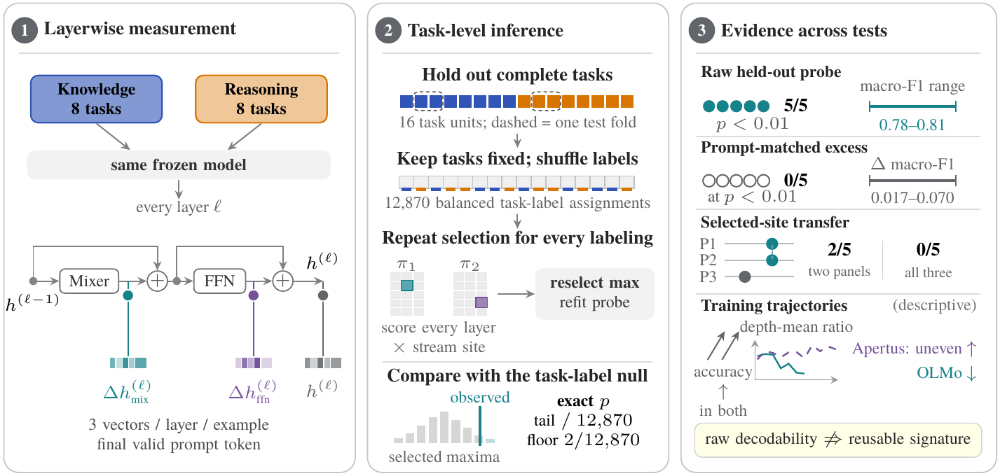
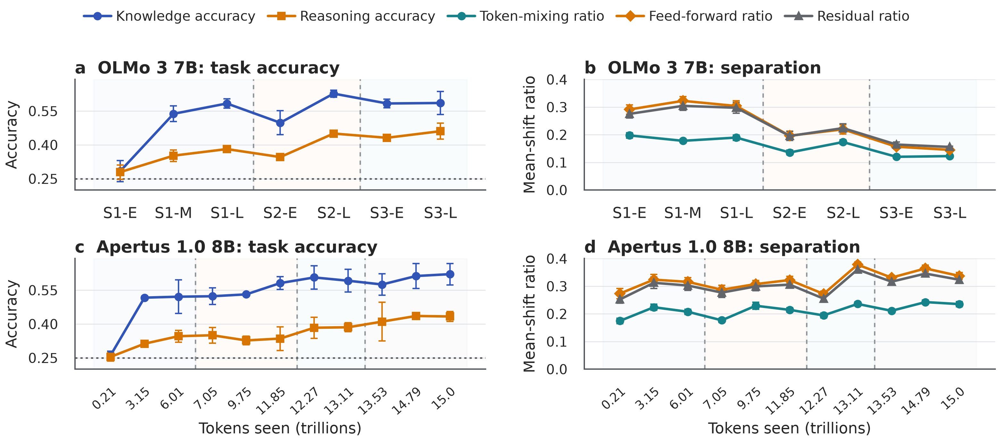

Sydney, Australia
Do Knowledge- and Reasoning-Oriented Benchmarks Induce Stable Representation Signatures in LLMs?
The study at a glance
Open full-size figure ↗

The central finding
Task labels are decodable.
A reusable signature needs more evidence.
We test whether “knowledge” and “reasoning” benchmark groups define a stable internal signal across five language models.
Primary tests use p < 0.01. A non-significant gain does not establish equivalence; moderate effects remain possible.
Primary comparison: five post-trained checkpoints, evaluated on text only.
Compare with the input
Prompt text carries much of the predictive signal.
Under the same 64-component probe, activations score slightly higher than prompt text. None of the five paired gains is significant under the exact task-label test.
Exact values and the matched test
| Model | Activations | Prompt text | Gain Δ | Exact p for Δ |
|---|---|---|---|---|
| OLMo 3 7B | 0.803 | 0.755 | +0.048 | 0.290 |
| Apertus 1.5 8B | 0.825 | 0.755 | +0.070 | 0.177 |
| Qwen 3.5 9B | 0.802 | 0.755 | +0.047 | 0.291 |
| Qwen 3.5 27B | 0.773 | 0.755 | +0.017 | 0.440 |
| Gemma 4 31B | 0.807 | 0.755 | +0.051 | 0.297 |
Vocabulary, dimensionality reduction, scaling, and classifier fitting exclude held-out subjects. The same classifier, folds, and regularization are used for both feature sets. All 12,870 balanced task-label assignments repeat activation-site selection and probe fitting. The exact p-values test the paired score difference.
How do these scores differ from the raw 5/5 result?
The raw probe uses a fold-local PCA basis retaining 95% of activation variance. It recovers the task label in all five models (macro-F1 0.781–0.805). The matched comparison above puts activations and prompt features into 64 components each, so its activation scores differ.
| Model | Raw macro-F1 | Exact p |
|---|---|---|
| OLMo 3 7B | 0.781 | 0.00155 |
| Apertus 1.5 8B | 0.804 | 0.00186 |
| Qwen 3.5 9B | 0.805 | 0.00186 |
| Qwen 3.5 27B | 0.796 | 0.00420 |
| Gemma 4 31B | 0.805 | 0.00404 |
The probe holds out subjects, but the layer–stream site is selected using the full panel. The exact test accounts for that choice by reselecting the site for every task-label assignment; this is not fully held-out site selection.
Choose the right independent unit
Hold out entire subjects.
A probe can recognize subjects when train and test contain questions from the same subjects. An arbitrary alphabetical subject partition shows how splitting and permuting at the example level inflates the evidence.
Examples mixed across subjects
Subject identity appears on both sides.
Whole subjects held out
The probe faces subjects it was not fitted on.
Schematic subjects A–D, with both task groups represented in each split. The diagnostic below uses all 16 subjects.
Exact diagnostic and its scope
| Validation and permutation unit | Macro-F1 | p |
|---|---|---|
| Random examples / sample-label permutations | 0.802 | 0.0001 |
| Whole subjects / exact task-label permutations | 0.574 | 0.228 |
This deliberately naive comparison changes both the split unit and the permutation unit. It uses an alphabetical negative-control partition, not the paper’s knowledge/reasoning labels. The example-level test uses 9,999 sample-label permutations; the valid task-level test uses all 12,870 balanced task-label assignments.
Test transfer
Change the task panel, and the selected site moves.
Only two models keep the same mean-shift-selected site between the two MMLU panels. No model keeps it across all three panels.
“Site” means a decoder layer and representation stream. Each model is compared with itself; mixed-task sites are descriptive.
Exact sites and panel definitions
| Model | MMLU-Pro · 5+5 | MMLU · 8+8 | Mixed tasks · 5+5 |
|---|---|---|---|
| OLMo 3 7B | L3 · FFN | L3 · FFN | L5 · token mixing |
| Apertus 1.5 8B | L0 · FFN | L0 · FFN | L8 · token mixing |
| Qwen 3.5 9B | L1 · token mixing | L2 · FFN | L11 · token mixing |
| Qwen 3.5 27B | L11 · FFN | L1 · token mixing | L5 · FFN |
| Gemma 4 31B | L12 · token mixing | L23 · FFN | L14 · FFN |
MMLU-Pro uses five subjects per group; the primary MMLU panel uses eight. The mixed panel contains five tasks per group from different benchmark families and remains confounded by topic, format, and difficulty. Layer indices start at zero. The selection statistic is the PCA-space mean-shift ratio, not probe accuracy or causal importance.
Changing the selector also changes the site in all 15 conditions
Across five models and three ridge strengths, every regularized covariance-whitened selector chooses a different site from the original mean-shift selector. The whitened maxima remain significant after Holm correction; recoverability and localization stability are separate questions.
| Model | Ridge α | Mean-shift site | Whitened site |
|---|---|---|---|
| OLMo 3 7B | 0.01 | L3 / FFN | L21 / residual |
| OLMo 3 7B | 0.1 | L3 / FFN | L20 / residual |
| OLMo 3 7B | 1.0 | L3 / FFN | L6 / residual |
| Apertus 1.5 8B | 0.01 | L0 / FFN | L18 / residual |
| Apertus 1.5 8B | 0.1 | L0 / FFN | L4 / residual |
| Apertus 1.5 8B | 1.0 | L0 / FFN | L4 / residual |
| Qwen 3.5 9B | 0.01 | L2 / FFN | L30 / residual |
| Qwen 3.5 9B | 0.1 | L2 / FFN | L30 / residual |
| Qwen 3.5 9B | 1.0 | L2 / FFN | L30 / residual |
| Qwen 3.5 27B | 0.01 | L1 / token mixing | L25 / token mixing |
| Qwen 3.5 27B | 0.1 | L1 / token mixing | L25 / token mixing |
| Qwen 3.5 27B | 1.0 | L1 / token mixing | L25 / token mixing |
| Gemma 4 31B | 0.01 | L23 / FFN | L31 / token mixing |
| Gemma 4 31B | 0.1 | L23 / FFN | L31 / token mixing |
| Gemma 4 31B | 1.0 | L23 / FFN | L22 / token mixing |
Follow training within each model
Accuracy rises. The separation summaries move in opposite directions.
All three depth-mean ratios finish lower in OLMo and higher in Apertus. These endpoint arrows summarize different staged training runs; neither complete trajectory is monotonic.
First → final checkpoint. Means over three paired example blocks; one training run per model. These are descriptive within-model comparisons.
All checkpoints, uncertainty, and exact endpoint values

| Model / stream | First checkpoint | Final checkpoint |
|---|---|---|
| OLMo 3 7B / Token mixing | 0.197 | 0.123 |
| OLMo 3 7B / Feed-forward | 0.291 | 0.145 |
| OLMo 3 7B / Residual state | 0.275 | 0.156 |
| Apertus 1.0 8B / Token mixing | 0.174 | 0.235 |
| Apertus 1.0 8B / Feed-forward | 0.273 | 0.337 |
| Apertus 1.0 8B / Residual state | 0.252 | 0.323 |
OLMo spans pretraining, midtraining, and long-context extension; Apertus 1.0 spans pretraining stages. Apertus 1.5 is a separate endpoint model and is not substituted into this trajectory.
The contribution
A protocol for testing a candidate internal signature.
- 1
Recover the label
Fit probes on training subjects and evaluate on entirely held-out subjects.
- 2
Compare with the input
Use matched prompt features, folds, and classifiers to test added prediction.
- 3
Check stability
Change task panels and selectors before reusing a selected site.
- 4
Calibrate and intervene
Measure detection sensitivity; test causal importance before downstream use.
Read the full abstract
Internal signatures could support monitoring, adaptive computation, and mechanistic analysis, but benchmark prompts can be separable without any shared computational distinction. We test whether a prespecified knowledge/reasoning label defines a reusable internal signature in five contemporary 7B to 31B models. We treat the task as the unit of inference: probes hold out complete tasks, labels are permuted across tasks, and the best layer and stream are reselected for every permutation.
Raw probes recover an eight-versus-eight-subject MMLU partition in all five models (macro-F1 0.78–0.81), but prompt text predicts it nearly as well: under an identical probe configuration, the activation advantage is only 0.017–0.070 macro-F1 and is not significant. At the prespecified 0.01 level, lexical adjustment removes significance while the adjusted states still identify individual subjects, and the selected site changes across task panels and selection rules. Additionally, two released base-training trajectories show no common direction. These pooled layerwise measures recover the task label but identify no transferable knowledge/reasoning signature at the tested sensitivity, which cannot exclude moderate effects. The resulting protocol gives future internal monitors and intervention studies a sequence of tests to pass.
Limits of the evidence
The knowledge/reasoning labels are operational task proxies that mix domain, format, difficulty, factual recall, and inference. Sixteen subjects are few independent units. The primary measurements pool the final prompt token; site selection uses the full panel although probe fitting holds out subjects. Linear lexical controls are partial and cannot prove causal mediation. Each training trajectory is one released run. The response-position pilot and heterogeneous multimodal analysis are descriptive supplementary results. The design was not publicly preregistered, and deployment overhead and robustness remain unvalidated.
Cite this work
@inproceedings{rahimi2026knowledge,
title = {Do Knowledge- and Reasoning-Oriented Benchmarks Induce
Stable Representation Signatures in {LLMs}?},
author = {Rahimi Noshanagh, Parsa and Dehghani Amirabad, Azim},
booktitle = {NeurIPS 2026 Workshop on Interpretability as a Science},
year = {2026},
eprint = {2610.24029},
archivePrefix = {arXiv},
url = {https://arxiv.org/abs/2610.24029}
}